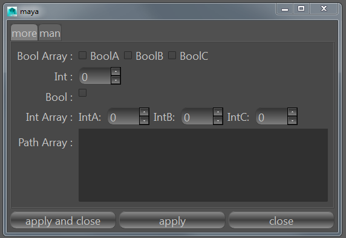
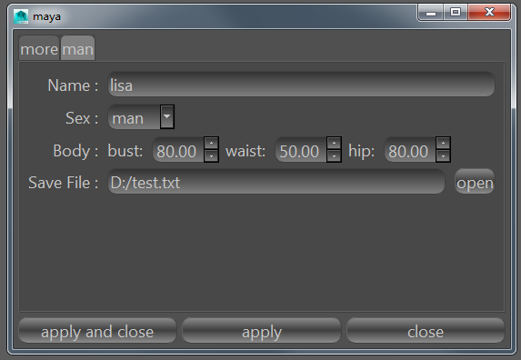

window
说明
每个窗口将由一或者多个功能函数构成。
每个功能函数名对应窗口上方的tab切换按钮。
界面中心是功能函数的参数名和参数组件。
下方按钮依次是运行函数并关闭。运行函数。关闭窗口。
窗口可转化为dict数据并保存到yaml文件中。
可直接编写yaml文件来直接制作窗口。
案例yaml中QFn.fn.man为函数的长名称（包名.模块名.函数名），该名称在python中一般是唯一的。
案例yaml中bode、name等是函数的参数名。
案例yaml中String()、Bool()等是生成参数组件的代码、具体请查看args模块。
window


dict
{'QFn.fn.man': {'body': "FloatArray(['bust', 'waist', 'hip'])",
'name': 'String()',
'save_file': "Path('txt')",
'sex': "Enum('man', 'woman')"},
'QFn.fn.more': {'bool': 'Bool()',
'bool_array': "BoolArray('BoolA', 'BoolB', 'BoolC')",
'int': 'Int()',
'int_array': "IntArray(['IntA', 'IntB', 'IntC'])",
'path_array': 'PathArray()'}}
yaml
QFn.fn.man:
body: FloatArray(['bust', 'waist', 'hip'])
name: String()
save_file: Path('txt')
sex: Enum('man', 'woman')
QFn.fn.more:
bool: Bool()
bool_array: BoolArray('BoolA', 'BoolB', 'BoolC')
int: Int()
int_array: IntArray(['IntA', 'IntB', 'IntC'])
path_array: PathArray()
案例
from QFn import window, fn, args
win = window.Window()
#创建窗口
win.showNormal()
#显示窗口
win.add(fn.man)
#添加函数
win.options.man(
name=args.String(),
sex=args.Enum("man", "woman"),
body=args.FloatArray(["bust", "waist", "hip"]),
save_file=args.Path("txt"),
error_arg=args.Path("txt")
)
#给man函数组件添加参数组件
win.add(fn.more)
win.options.more(
path_array=args.PathArray(),
int=args.Int(),
int_array=args.IntArray(["IntA", "IntB", "IntC"]),
bool=args.Bool(),
bool_array=args.BoolArray("BoolA", "BoolB", "BoolC"),
)
win.save("D:/test.yaml")
#将窗口保存为yaml文件。
new_winodw = window.Window("D:/test.yaml")
new_winodw.show()
#通过yaml文件生成窗口